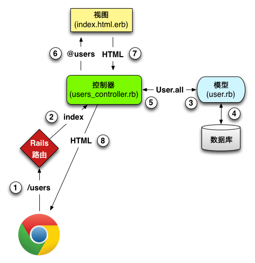

做一个微博玩具应用
$ cd ~/workspace
$ rails new toy_app
$ cd toy_app/
$ git init
$ git add -A
$ git commit -m "Initialize repository"
$ git remote add origin git@bitbucket.org:quake/toy_app.git
$ git push -u origin --all
一般来说,开发 Web 应用的第一步是创建数据模型(data model)
| users | |
| id | integer |
| name | string |
| string | |
| microposts | |
| id | integer |
| content | text |
| user_id | integer |
$ rails generate scaffold User name:string email:string
$ bundle exec rake db:migrate
$ rails server
| URL | 动作 | 作用 |
| /users | index | 列出所有用户 |
| /users/1 | show | 显示 ID 为 1 的用户 |
| /users/new | new | 创建新用户 |
| /users/1/edit | edit | 编辑 ID 为 1 的用户 |
$ rails server
models / views / controllers

$ rails generate scaffold Micropost content:text user_id:integer
$ bundle exec rake db:migrate
表现层状态转化(Representational State Transfer)
| HTTP 请求 | URL | 动作 | 作用 |
| POST | /microposts | create | 创建新微博 |
| PATCH | /microposts/1 | update | 更新 ID 为 1 的微博 |
| DELETE | /microposts/1 | destroy | 删除 ID 为 1 的微博 |
#app/models/micropost.rb
class Micropost < ActiveRecord::Base
validates :content, length: { maximum: 140 }
end
#app/models/user.rb
class User < ActiveRecord::Base
has_many :microposts
end
#app/models/micropost.rb
class Micropost < ActiveRecord::Base
belongs_to :user
validates :content, length: { maximum: 140 }
end
$ rails console
>> first_user = User.first
>> first_user.microposts
>> micropost = first_user.microposts.first
>> micropost.user
>> exit